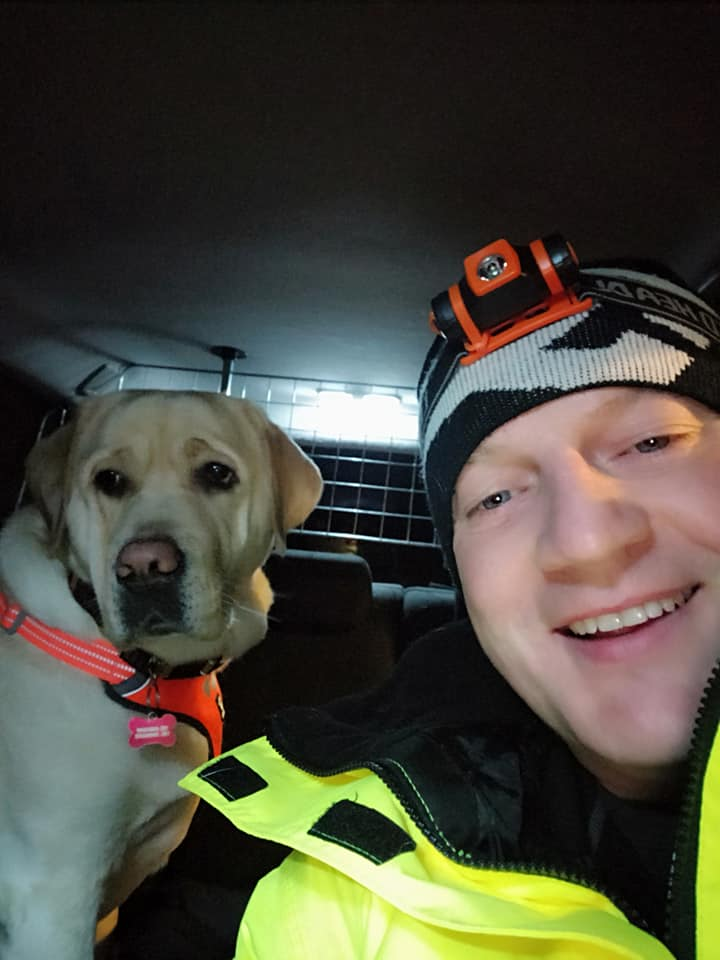

The purpose of a freight truck is to transport goods from one location to another, but not all trucks qualify to carry certain merchandise. Oversized items, hazardous materials and temperature sensitive cargo requires experienced handling from specialized trucks.
Graarud spesialtransport AS was founded back in 1935 Norway and is known for not only being one of the oldest good transporting companies in østfold, but also of the specialized cargo that they convey.We have had an opportunity to interview one of their workers to get an insight of how it is like to transport unique merchendise.
The Interview
- Can you introduce yourself?
My name is Adomas Zepciukas, I am 48 years old. My nationality is Lithuanian, and I have been a resident in Norway for 18 years now.
- How did you decide to be a truck driver?
I wanted to be truck driver ever since i was little. I loved to drive and repair cars, so to be able to do all those things, but also get paid well, so I though that truck driving is the best option
- How long have you been working in the transportation industry?
I got my truck driving license in 2012 and soon after in 2014 I got a job at Graarud spesialtransport.
- Can you describe a typical work day?
I wake up at 4 in the morning. It takes around 20 minutes to drive to work and get my truck, so I leave for my first trip at 5. On an average day I do 3 back and forth trips to Oslo, that is around 600km and I am home by 6pm.
- How do you handle the stress and isolation that can come with long hours on the road?
What helps me get through the day is being able to come back home to my family and my dog. I try to take my dog out to the near by woods to get some fresh air, but sometimes I am gone for longer periods and are unable to do so every evening.
- What type of truck do you drive, and what do you like about it?
Currently, I am driving a Volvo, but will soon get a new Scania truck. Our trucks are specialized for big cargo, meaning that they are longer and can hande large loads.I love to personalize it and make it more homey. Our company paints the trucks with famous movie characters and allow us to improve the enterior as we like.
- What are the biggest challenges you face as a truck driver?
The biggest challenge is to navigate and find the best roads to take with big loads. There have been a couple of times where I had to cut tree branches that were blocking a very narrow cuntry road.
- What is the most memorable trip you had?
- Do you have any advice for aspiring truck drivers?
If they are thinking of taking on specialized freight truck job, they need to know that it is a really responsible task. You need to have pacience and deal well with stressful situations.
{kind=link}
{kind=link}
{kind=link}
{kind=link}
{kind=link}
{kind=link}
{kind=link}
{kind=link}
{kind=link}
{kind=link}
{kind=link}
{kind=link}
{kind=link}
{kind=link}